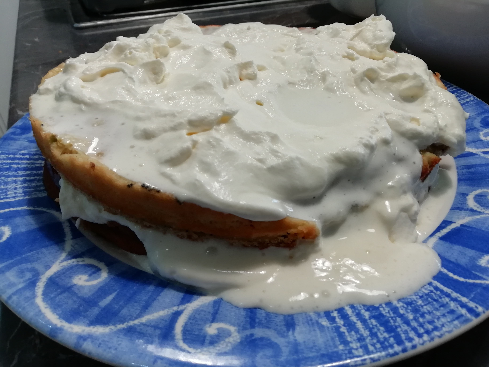

Pistacho Cake

Description
Uuuhhhhhhhhhhhhhhhhhhhhhhhhhhhh
Even the texture was wrong. It was super dense and more like a yoga mat than a cake
Ingredients
- TBH this is lost to time. I tried to find the recipe we followed but to no avail.
- Flour?
- Sugar
- Cream
- Eggs
- Pistachios
Steps
- Make a cake
- Don't leave it to cool like the original recipe tells you
- Immediately slap icing on
- ???????????
- Sprinkle crushed pistachio on top